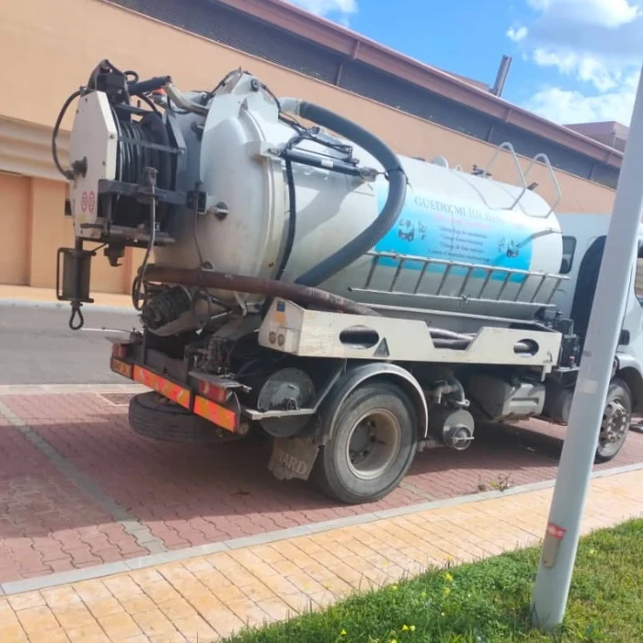

Urgence débouchage canalisation, installation et entretien de pompes de relevage — 24h/24, 7j/7, dans toute l'Île-de-France.
06 02 79 12 08Des solutions complètes pour vos canalisations, du simple bouchon à l'urgence la plus délicate.

Nous assurons le débouchage complet de toutes vos canalisations : éviers, lavabos, douches, WC et réseaux extérieurs. Grâce à nos équipements professionnels (furet électrique, hydrocureuse haute pression), nous éliminons durablement tout type d'obstruction.

Avant toute intervention, notre équipe effectue un diagnostic précis pour identifier fissures, bouchons ou déformations dans vos tuyaux, garantissant des réparations ciblées et sans casse inutile.

Une canalisation bouchée au milieu de la nuit ? Nos techniciens sont disponibles 24h/24 et 7j/7 pour toute urgence de débouchage, fuite ou refoulement d'eau, partout en Île-de-France.
De l'installation à la maintenance préventive, nous prenons en charge l'ensemble de vos équipements de relevage.
Nous assurons le remplacement de tous types de pompes de relevage, avec une intervention rapide et des équipements de qualité garantissant la fiabilité et la performance de vos installations.
Nous réalisons l'installation de pompes de relevage adaptées à vos besoins, dans le respect des normes en vigueur.
Nous effectuons le nettoyage complet des postes de relevage afin d'éliminer les dépôts, les graisses et les déchets pouvant perturber le bon fonctionnement de vos équipements.
Nous proposons des contrats d'entretien préventif pour assurer le bon fonctionnement de vos installations, limiter les risques de panne et prolonger leur durée de vie.
Nos équipes interviennent rapidement pour diagnostiquer et résoudre les pannes de pompes et de postes de relevage, afin de rétablir votre installation dans les meilleurs délais.
Nous réalisons le curage et le nettoyage des cuves de relevage pour garantir leur bon fonctionnement et prévenir les obstructions.
Nous contrôlons l'état de vos installations et vous proposons des solutions adaptées pour optimiser leur performance et leur fiabilité.


Paris • Hauts-de-Seine (92) • Seine-Saint-Denis (93) • Val-de-Marne (94)
Yvelines (78) • Essonne (91) • Val-d'Oise (95)
Fort de plus de 25 ans d'expérience, nous intervenons rapidement chez vous pour déboucher toutes vos canalisations bouchées, remplacer ou entretenir vos pompes de relevage. La demande étant souvent urgente, nous faisons tout notre possible pour vous dépanner rapidement à Paris et dans toute la région Île-de-France.
Appelez-nous au 06 02 79 12 08 pour le débouchage de vos canalisations, fosses septiques, égouts ou pompes de relevage, 24h/24 et 7j/7. Nous convenons d'un rendez-vous et intervenons à votre convenance, dans un délai maximal d'une heure !
Notre objectif est que vous retrouviez l'usage de vos sanitaires et de vos installations rapidement et durablement.
Nous réalisons tous vos travaux de débouchage de canalisations, d'égouts, de vidange de fosse septique et d'assainissement, ainsi que l'installation, le remplacement et l'entretien de pompes et postes de relevage.
Notre équipe réalise le curage complet de vos réseaux d'assainissement et le dégorgement des canalisations d'eau usée ou pluviale. Nous disposons de camions hydrocureurs haute pression pour des interventions efficaces et rapides.
Pour éviter les bouchons, versez régulièrement de l'eau chaude mélangée à du vinaigre blanc dans vos conduits. Évitez de jeter lingettes, graisses et déchets solides. Nous pouvons également vous proposer un contrat d'entretien annuel pour garantir le bon fonctionnement de vos canalisations et de vos pompes de relevage.
Parce que nous savons qu'une canalisation bouchée ou une pompe de relevage en panne est une urgence, notre équipe met tout en œuvre pour intervenir rapidement, proprement et efficacement.
Nos techniciens qualifiés sont formés aux dernières techniques de débouchage, de curage et de relevage, garantissant un service durable et sans dégâts.

Nous intervenons en moins de 30 minutes dans toute l'Île-de-France, 7j/7, y compris les jours fériés.
Nos clients nous choisissent pour notre transparence, notre efficacité et notre accompagnement personnalisé avant et après intervention.
Depuis plus de 25 ans, notre équipe accompagne particuliers, professionnels et industriels de toute l'Île-de-France dans le débouchage, le curage et l'entretien de leurs installations, y compris leurs pompes et postes de relevage.
Réactivité, transparence et savoir-faire sont au cœur de chacune de nos interventions.
Nos équipes sont disponibles 24h/24 et 7j/7 dans toute l'Île-de-France.
06 02 79 12 08